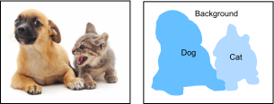

14.9. 语义分割与数据集¶
在 14.3节–14.8节 中 讨论目标检测任务时， 矩形边界框 被用来标注和预测图像中的目标。 本节将讨论语义分割（semantic segmentation）问题， 它关注如何把一幅图像划分为属于不同语义类别的区域。 与目标检测不同， 语义分割 在像素级别上识别和理解 图像中有什么： 它对语义区域的标注和预测 都是像素级的。 图14.9.1 展示了 语义分割中对图像中狗、猫和背景的标签。 与目标检测相比， 语义分割中标注的 像素级边界显然更加精细。

图14.9.1 语义分割中对图像中狗、猫和背景的标签。¶
14.9.1. 图像分割和实例分割¶
计算机视觉领域中还有两个 与语义分割类似的重要任务， 即图像分割和实例分割。 我们将在下面简要说明 它们与语义分割的区别。
图像分割（image segmentation）把图像划分为若干个组成区域。这类问题的方法通常利用图像中像素之间的相关性。它在训练时不需要关于图像像素的标签信息，也不能保证分割出的区域在预测时具有我们希望得到的语义。以 图14.9.1 中的图像作为输入，图像分割可能会把狗分成两个区域：一个区域覆盖主要呈黑色的嘴和眼睛，另一个区域覆盖主要呈黄色的身体其余部分。
实例分割（instance segmentation）也称为同时检测与分割（simultaneous detection and segmentation）。它研究如何识别图像中每个目标实例的像素级区域。与语义分割不同，实例分割不仅需要区分语义，还需要区分不同的目标实例。例如，如果图像中有两只狗，实例分割需要区分一个像素属于这两只狗中的哪一只。
14.9.2. Pascal VOC2012 语义分割数据集¶
最重要的语义分割数据集 之一是 Pascal VOC2012。 在下面， 我们将看一看这个数据集。
%matplotlib inline
import os
import torch
import torchvision
from d2l import torch as d2l
%matplotlib inline
import os
from mxnet import gluon, image, np, npx
from d2l import mxnet as d2l
npx.set_np()
该数据集的 tar 文件大约 2 GB， 因此下载该文件可能需要一段时间。
解压后的数据集位于 ../data/VOCdevkit/VOC2012。
#@save
d2l.DATA_HUB['voc2012'] = (d2l.DATA_URL + 'VOCtrainval_11-May-2012.tar',
'4e443f8a2eca6b1dac8a6c57641b67dd40621a49')
voc_dir = d2l.download_extract('voc2012', 'VOCdevkit/VOC2012')
#@save
d2l.DATA_HUB['voc2012'] = (d2l.DATA_URL + 'VOCtrainval_11-May-2012.tar',
'4e443f8a2eca6b1dac8a6c57641b67dd40621a49')
voc_dir = d2l.download_extract('voc2012', 'VOCdevkit/VOC2012')
进入 ../data/VOCdevkit/VOC2012 路径后，
我们可以看到数据集的不同组成部分。 ImageSets/Segmentation 路径包含
指定训练样本和测试样本的文本文件， 而 JPEGImages 和
SegmentationClass 路径 分别存储每个样例的输入图像和标签。
这里的标签同样是图像格式， 与其标注的输入图像 大小相同。 此外，
任何标签图像中颜色相同的像素都属于同一语义类别。 下面定义
read_voc_images 函数，把所有输入图像和标签读入内存。
#@save
def read_voc_images(voc_dir, is_train=True):
"""Read all VOC feature and label images."""
txt_fname = os.path.join(voc_dir, 'ImageSets', 'Segmentation',
'train.txt' if is_train else 'val.txt')
mode = torchvision.io.image.ImageReadMode.RGB
with open(txt_fname, 'r') as f:
images = f.read().split()
features, labels = [], []
for i, fname in enumerate(images):
features.append(torchvision.io.read_image(os.path.join(
voc_dir, 'JPEGImages', f'{fname}.jpg')))
labels.append(torchvision.io.read_image(os.path.join(
voc_dir, 'SegmentationClass' ,f'{fname}.png'), mode))
return features, labels
train_features, train_labels = read_voc_images(voc_dir, True)
#@save
def read_voc_images(voc_dir, is_train=True):
"""Read all VOC feature and label images."""
txt_fname = os.path.join(voc_dir, 'ImageSets', 'Segmentation',
'train.txt' if is_train else 'val.txt')
with open(txt_fname, 'r') as f:
images = f.read().split()
features, labels = [], []
for i, fname in enumerate(images):
features.append(image.imread(os.path.join(
voc_dir, 'JPEGImages', f'{fname}.jpg')))
labels.append(image.imread(os.path.join(
voc_dir, 'SegmentationClass', f'{fname}.png')))
return features, labels
train_features, train_labels = read_voc_images(voc_dir, True)
我们绘制前五幅输入图像及其标签。 在标签图像中，白色和黑色分别代表边界和背景，而其他颜色对应不同的类别。
n = 5
imgs = train_features[:n] + train_labels[:n]
imgs = [img.permute(1,2,0) for img in imgs]
d2l.show_images(imgs, 2, n);
n = 5
imgs = train_features[:n] + train_labels[:n]
d2l.show_images(imgs, 2, n);
接下来，我们为该数据集中的所有标签列举 RGB 颜色值和类别名称。
#@save
VOC_COLORMAP = [[0, 0, 0], [128, 0, 0], [0, 128, 0], [128, 128, 0],
[0, 0, 128], [128, 0, 128], [0, 128, 128], [128, 128, 128],
[64, 0, 0], [192, 0, 0], [64, 128, 0], [192, 128, 0],
[64, 0, 128], [192, 0, 128], [64, 128, 128], [192, 128, 128],
[0, 64, 0], [128, 64, 0], [0, 192, 0], [128, 192, 0],
[0, 64, 128]]
#@save
VOC_CLASSES = ['background', 'aeroplane', 'bicycle', 'bird', 'boat',
'bottle', 'bus', 'car', 'cat', 'chair', 'cow',
'diningtable', 'dog', 'horse', 'motorbike', 'person',
'potted plant', 'sheep', 'sofa', 'train', 'tv/monitor']
#@save
VOC_COLORMAP = [[0, 0, 0], [128, 0, 0], [0, 128, 0], [128, 128, 0],
[0, 0, 128], [128, 0, 128], [0, 128, 128], [128, 128, 128],
[64, 0, 0], [192, 0, 0], [64, 128, 0], [192, 128, 0],
[64, 0, 128], [192, 0, 128], [64, 128, 128], [192, 128, 128],
[0, 64, 0], [128, 64, 0], [0, 192, 0], [128, 192, 0],
[0, 64, 128]]
#@save
VOC_CLASSES = ['background', 'aeroplane', 'bicycle', 'bird', 'boat',
'bottle', 'bus', 'car', 'cat', 'chair', 'cow',
'diningtable', 'dog', 'horse', 'motorbike', 'person',
'potted plant', 'sheep', 'sofa', 'train', 'tv/monitor']
利用上面定义的两个常量， 我们可以方便地 找出标签中每个像素的类别索引。
我们定义 voc_colormap2label 函数， 建立从上述 RGB 颜色值
到类别索引的映射； 并定义 voc_label_indices 函数， 把任意 RGB
值映射到其在该 Pascal VOC2012 数据集中的类别索引。
#@save
def voc_colormap2label():
"""Build the mapping from RGB to class indices for VOC labels."""
colormap2label = torch.zeros(256 ** 3, dtype=torch.long)
for i, colormap in enumerate(VOC_COLORMAP):
colormap2label[
(colormap[0] * 256 + colormap[1]) * 256 + colormap[2]] = i
return colormap2label
#@save
def voc_label_indices(colormap, colormap2label):
"""Map any RGB values in VOC labels to their class indices."""
colormap = colormap.permute(1, 2, 0).numpy().astype('int32')
idx = ((colormap[:, :, 0] * 256 + colormap[:, :, 1]) * 256
+ colormap[:, :, 2])
return colormap2label[idx]
#@save
def voc_colormap2label():
"""Build the mapping from RGB to class indices for VOC labels."""
colormap2label = np.zeros(256 ** 3)
for i, colormap in enumerate(VOC_COLORMAP):
colormap2label[
(colormap[0] * 256 + colormap[1]) * 256 + colormap[2]] = i
return colormap2label
#@save
def voc_label_indices(colormap, colormap2label):
"""Map any RGB values in VOC labels to their class indices."""
colormap = colormap.astype(np.int32)
idx = ((colormap[:, :, 0] * 256 + colormap[:, :, 1]) * 256
+ colormap[:, :, 2])
return colormap2label[idx]
例如，在第一幅样例图像中， 飞机前部的类别索引为 1， 而背景索引为 0。
y = voc_label_indices(train_labels[0], voc_colormap2label())
y[105:115, 130:140], VOC_CLASSES[1]
y = voc_label_indices(train_labels[0], voc_colormap2label())
y[105:115, 130:140], VOC_CLASSES[1]
14.9.2.1. 数据预处理¶
在之前的实验中 （例如 8.1节–8.4节）， 图像会被缩放 以符合模型所需的输入形状。 然而，在语义分割中， 这样做 需要把预测的像素类别 再缩放回输入图像的原始形状。 这种缩放可能不准确， 尤其是对于属于不同类别的分割区域。为避免这个问题， 我们对图像进行裁剪，使其变为固定形状，而不是缩放。具体地说，我们使用图像增广中的随机裁剪，裁剪输入图像和标签的相同区域。
#@save
def voc_rand_crop(feature, label, height, width):
"""Randomly crop both feature and label images."""
rect = torchvision.transforms.RandomCrop.get_params(
feature, (height, width))
feature = torchvision.transforms.functional.crop(feature, *rect)
label = torchvision.transforms.functional.crop(label, *rect)
return feature, label
imgs = []
for _ in range(n):
imgs += voc_rand_crop(train_features[0], train_labels[0], 200, 300)
imgs = [img.permute(1, 2, 0) for img in imgs]
d2l.show_images(imgs[::2] + imgs[1::2], 2, n);
#@save
def voc_rand_crop(feature, label, height, width):
"""Randomly crop both feature and label images."""
feature, rect = image.random_crop(feature, (width, height))
label = image.fixed_crop(label, *rect)
return feature, label
imgs = []
for _ in range(n):
imgs += voc_rand_crop(train_features[0], train_labels[0], 200, 300)
d2l.show_images(imgs[::2] + imgs[1::2], 2, n);
14.9.2.2. 自定义语义分割数据集类¶
我们通过继承高级 API 提供的 Dataset 类，
定义一个自定义的语义分割数据集类 VOCSegDataset。 通过实现
__getitem__ 函数， 我们可以任意访问数据集中索引为 idx
的输入图像， 以及该图像中每个像素的类别索引。 由于数据集中有些图像的尺寸
小于随机裁剪的输出尺寸， 这些样例会被自定义的 filter 函数 过滤掉。
此外，我们还 定义了 normalize_image 函数， 对输入图像的三个 RGB
通道值进行标准化。
#@save
class VOCSegDataset(torch.utils.data.Dataset):
"""A customized dataset to load the VOC dataset."""
def __init__(self, is_train, crop_size, voc_dir):
self.transform = torchvision.transforms.Normalize(
mean=[0.485, 0.456, 0.406], std=[0.229, 0.224, 0.225])
self.crop_size = crop_size
features, labels = read_voc_images(voc_dir, is_train=is_train)
self.features = [self.normalize_image(feature)
for feature in self.filter(features)]
self.labels = self.filter(labels)
self.colormap2label = voc_colormap2label()
print('read ' + str(len(self.features)) + ' examples')
def normalize_image(self, img):
return self.transform(img.float() / 255)
def filter(self, imgs):
return [img for img in imgs if (
img.shape[1] >= self.crop_size[0] and
img.shape[2] >= self.crop_size[1])]
def __getitem__(self, idx):
feature, label = voc_rand_crop(self.features[idx], self.labels[idx],
*self.crop_size)
return (feature, voc_label_indices(label, self.colormap2label))
def __len__(self):
return len(self.features)
#@save
class VOCSegDataset(gluon.data.Dataset):
"""A customized dataset to load the VOC dataset."""
def __init__(self, is_train, crop_size, voc_dir):
self.rgb_mean = np.array([0.485, 0.456, 0.406])
self.rgb_std = np.array([0.229, 0.224, 0.225])
self.crop_size = crop_size
features, labels = read_voc_images(voc_dir, is_train=is_train)
self.features = [self.normalize_image(feature)
for feature in self.filter(features)]
self.labels = self.filter(labels)
self.colormap2label = voc_colormap2label()
print('read ' + str(len(self.features)) + ' examples')
def normalize_image(self, img):
return (img.astype('float32') / 255 - self.rgb_mean) / self.rgb_std
def filter(self, imgs):
return [img for img in imgs if (
img.shape[0] >= self.crop_size[0] and
img.shape[1] >= self.crop_size[1])]
def __getitem__(self, idx):
feature, label = voc_rand_crop(self.features[idx], self.labels[idx],
*self.crop_size)
return (feature.transpose(2, 0, 1),
voc_label_indices(label, self.colormap2label))
def __len__(self):
return len(self.features)
14.9.2.3. 读取数据集¶
我们使用自定义的 VOCSegDataset 类 分别创建训练集和测试集的实例。
假设 我们指定随机裁剪后图像的输出形状为 \(320\times 480\)。
下面我们可以查看 训练集和测试集中保留的样例数量。
crop_size = (320, 480)
voc_train = VOCSegDataset(True, crop_size, voc_dir)
voc_test = VOCSegDataset(False, crop_size, voc_dir)
crop_size = (320, 480)
voc_train = VOCSegDataset(True, crop_size, voc_dir)
voc_test = VOCSegDataset(False, crop_size, voc_dir)
把批量大小设为 64， 我们定义训练集的数据迭代器。 让我们打印第一个小批量的形状。 与图像分类或目标检测不同，这里的标签是三维张量。
batch_size = 64
train_iter = torch.utils.data.DataLoader(voc_train, batch_size, shuffle=True,
drop_last=True,
num_workers=d2l.get_dataloader_workers())
for X, Y in train_iter:
print(X.shape)
print(Y.shape)
break
batch_size = 64
train_iter = gluon.data.DataLoader(voc_train, batch_size, shuffle=True,
last_batch='discard',
num_workers=d2l.get_dataloader_workers())
for X, Y in train_iter:
print(X.shape)
print(Y.shape)
break
14.9.2.4. 把所有组件放在一起¶
最后，我们定义下面的 load_data_voc 函数， 用来下载并读取 Pascal
VOC2012 语义分割数据集。 它返回训练数据集和测试数据集的 数据迭代器。
#@save
def load_data_voc(batch_size, crop_size):
"""Load the VOC semantic segmentation dataset."""
voc_dir = d2l.download_extract('voc2012', os.path.join(
'VOCdevkit', 'VOC2012'))
num_workers = d2l.get_dataloader_workers()
train_iter = torch.utils.data.DataLoader(
VOCSegDataset(True, crop_size, voc_dir), batch_size,
shuffle=True, drop_last=True, num_workers=num_workers)
test_iter = torch.utils.data.DataLoader(
VOCSegDataset(False, crop_size, voc_dir), batch_size,
drop_last=True, num_workers=num_workers)
return train_iter, test_iter
#@save
def load_data_voc(batch_size, crop_size):
"""Load the VOC semantic segmentation dataset."""
voc_dir = d2l.download_extract('voc2012', os.path.join(
'VOCdevkit', 'VOC2012'))
num_workers = d2l.get_dataloader_workers()
train_iter = gluon.data.DataLoader(
VOCSegDataset(True, crop_size, voc_dir), batch_size,
shuffle=True, last_batch='discard', num_workers=num_workers)
test_iter = gluon.data.DataLoader(
VOCSegDataset(False, crop_size, voc_dir), batch_size,
last_batch='discard', num_workers=num_workers)
return train_iter, test_iter
14.9.3. 小结¶
语义分割通过把图像划分为属于不同语义类别的区域，在像素级别上识别和理解图像中有什么。
最重要的语义分割数据集之一是 Pascal VOC2012。
在语义分割中，由于输入图像和标签在像素上一一对应，因此输入图像被随机裁剪为固定形状，而不是缩放。
14.9.4. 练习¶
语义分割如何应用于自动驾驶汽车和医学图像诊断？你还能想到其他应用吗？
回想 14.1节 中关于数据增广的描述。图像分类中使用的哪些图像增广方法在语义分割中不可行？